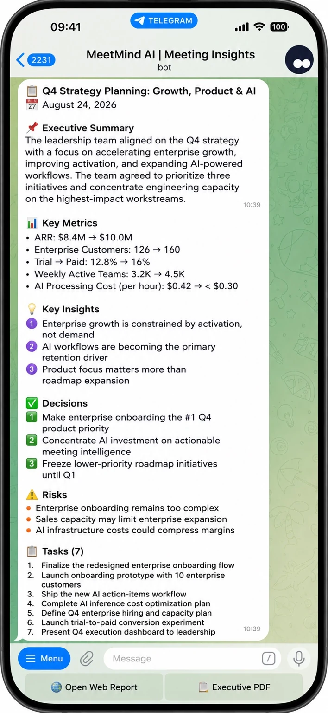
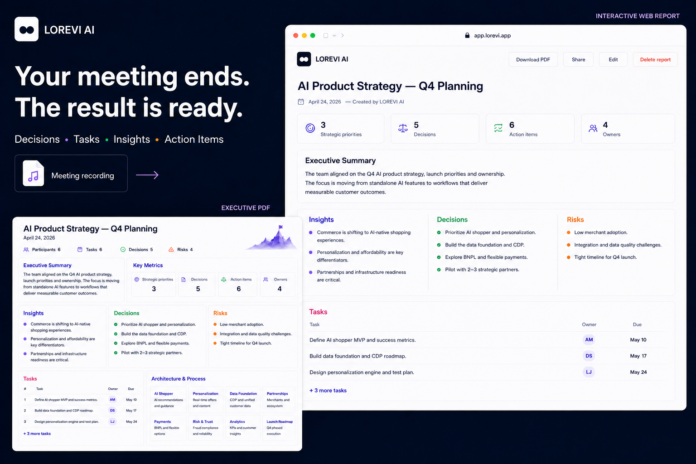

هوش مصنوعی برای جلسات کاری
جلسه تمام شد. نتیجه از قبل آماده است.
MeetMind AI ضبط جلسه را به تصمیمها، وظایف، ریسکها و گامهای بعدی تبدیل میکند — در Telegram، Interactive Web Report و Executive PDF.
رایگان در Telegram امتحان کنید ↗۳۰ دقیقه پردازش رایگان · بدون کارت
TelegramWeb ReportExecutive PDF
Interactive Web ReportTelegramExecutive PDF


نحوه کار
از ضبط جلسه تا نتیجه آماده
صوت یا ویدئو را بارگذاری کنید. MeetMind گفتگو را تحلیل و موارد مهم برای پیگیری را ساختاریافته میکند.
هوش مصنوعی گفتگو را تحلیل میکند
نتیجه آماده را دریافت کنید

قابلیتها
یک جلسه. یک نتیجه. سه قالب.
در Telegram به اشتراک بگذارید، در Web Report ویرایش کنید یا Executive PDF بسازید.
01 · TELEGRAM
Telegram Report
در Telegram به اشتراک بگذارید، در Web Report ویرایش کنید یا Executive PDF بسازید.
02 · WEB REPORT
Interactive Web Report
MeetMind تصمیمها، وظایف، مسئولان، مهلتها، ریسکها و بینشها را شناسایی میکند.
03 · EXECUTIVE PDF
Executive PDF
نیازی به گوش دادن دوباره، نوشتن صورتجلسه دستی یا بازسازی توافقها نیست.
AI
فقط رونویسی نمیکند. مهمترین نکات را میفهمد.
MeetMind تصمیمها، وظایف، مسئولان، مهلتها، ریسکها و بینشها را شناسایی میکند.
Summary
Decisions
Tasks
Owners
Deadlines
Risks
Insights
Transcript
بعد از جلسه، کار دوم شروع نمیشود.
نیازی به گوش دادن دوباره، نوشتن صورتجلسه دستی یا بازسازی توافقها نیست.
کاربردها
برای جلساتی که باید با نتیجه تمام شوند.
جلسات تیم، مشتری، مصاحبه، پروژه و استراتژی.
با یک جلسه واقعی امتحان کنید.
۳۰ دقیقه رایگان برای پردازش صوت یا ویدئوی خودتان.
FAQ
سؤالات متداول
MeetMind AI
MeetMind AI ضبط جلسه را به تصمیمها، وظایف، ریسکها و گامهای بعدی تبدیل میکند — در Telegram، Interactive Web Report و Executive PDF.
از ضبط جلسه تا نتیجه آماده
صوت یا ویدئو را بارگذاری کنید. MeetMind گفتگو را تحلیل و موارد مهم برای پیگیری را ساختاریافته میکند.
یک جلسه. یک نتیجه. سه قالب.
در Telegram به اشتراک بگذارید، در Web Report ویرایش کنید یا Executive PDF بسازید.
با یک جلسه واقعی امتحان کنید.
۳۰ دقیقه رایگان برای پردازش صوت یا ویدئوی خودتان.